部落远征
游戏已经做好，可以玩了。它是一个竖屏网页游戏，项目在 ~/Downloads/git/warcraft-roguelike。在项目目录运行 npm run dev，浏览器打开 http://localhost:5174/ 就能玩。
我用无头 Chrome 自动跑了几局，覆盖了出牌、回合结算、BOSS 战、战利品选择、前进到下一波和失败界面，没有报错。不过自动脚本出牌很笨，数值平衡只粗调过，需要你亲手玩几局来判断。

玩法
- 回合：每回合 3 点能量、抽 5 张牌。兵牌召唤英雄上场，最多 5 个（前排 3 个、后排 2 个）；法术牌立即生效。点「结束回合」后，英雄按各自技能自动攻击，然后轮到敌人。大本营初始 80 点生命。
- 英雄（10 个）：
英雄 攻 / 血 技能 兽人步兵 6 / 24 攻击最前方的敌人 巨魔猎手 4 / 15 投掷两次飞斧，优先打残血 牛头人萨满 4 / 34 嘲讽；攻击前排后治疗全体友军 3 冰霜法师 3 / 14 攻击全部敌人（冰属性） 矮人狂战士 8 / 28 攻击前排，35% 几率眩晕（对首领 15%） 月神祭司 2 / 16 治疗血量最低的友军 8，并攻击前排 圣盾卫士 5 / 30 攻击前排，然后全队获得 3 点护盾 游侠 5 / 18 狙击血量最低的敌人，目标半血以下额外 +4 暗影术士 5 / 20 攻击前排并按伤害吸血（火属性） 雷鸣萨满 6 / 22 闪电攻击最多 3 个敌人，伤害逐次衰减（雷属性） - 升星：场上已有同名英雄时再打出这张牌，英雄升一星，最高 5 星。
- 法术（14 张）：
法术 效果 火球术 对单个敌人造成 10 点伤害 寒冰箭 对单个敌人造成 6 点伤害并眩晕 1 回合（冰冻） 惩击 对单个敌人造成 14 点伤害 斩杀 造成 6 点伤害，目标血量低于一半时改为 20 暴风雪 对所有敌人造成 5 点伤害 闪电链 随机 3 次闪电，每次 7 点伤害 陨石术 对所有敌人造成 9 点伤害，并灼烧 3 回合（每回合 3，已灼烧时翻倍） 巨龙空袭 传说卡：巨龙掠过战场，对所有敌人造成 16 点火焰伤害并灼烧（每回合 4） 治疗波 治疗全体友军 8，大本营 5 复苏术 治疗全体友军 12，大本营 8 盾墙 全体友军获得 8 点护盾 嗜血术 本波全体友军攻击 +3 集结号令 本波全体友军攻击 +2，并获得 4 点护盾 奥术智慧 抽 2 张牌 - 一路往前打：清空一波后三选一奖励（新卡、修缮大本营、法术强化等），再从路线地图选下一站（见下方「肉鸽系统」）。英雄带着血量和星级跟进下一波。
- BOSS：每 5 波 一个，依次是冰霜骨龙、霜冠巫妖、恐惧魔王，之后循环并逐轮变强。每个 BOSS 每隔几回合放一次大招（冰霜吐息、召唤亡灵加冰冻、邪能火雨），会先在地上标出预警圈，半血时狂暴化。击败后可以选「能量上限 +1」或「全体英雄升星」。
- 卡组：主菜单「🃏 卡组」里可以自己组起始卡组，10 到 16 张，每张卡按稀有度有份数上限。
- 天赋：每局结束按成绩获得天赋点（每清一波 1 点，每击败一个首领再加 2 点），在主菜单「⭐ 天赋」里投入，分大本营、能量、法术、兵种四系，比如城墙加固、能量之泉（能量上限 +1）、法术回响、先祖之魂（新英雄直接 2 星）。随时可以重置。
- 失败：大本营血量归零即结束，会记录最远到达的波次。
版本更新
这一版加入了 3D 镜头操作、最后一击慢动作，以及九个新玩法：暴击、元素反应、英雄大招、首领预警与换位躲避、首领狂暴化、传说卡「巨龙空袭」、阵营羁绊、遗物和分支路线地图。
之后又补齐了三个首领的 AI 模型，并新增两位路边来客：德莱尼先知和乌鸦领主。他们会在开场、首领战前后和随机时机出现，介绍剧情、预言下一个首领。
7 套自动化测试全部通过（见下方「测试」）。数值是第一版，需要实际玩几局再调。
镜头与动作
- AI 模型动作：15 个 AI 生成的 3D 模型（6 个英雄、4 种敌人、3 个首领、2 个路边来客）都绑定了骨骼，有待机、行走、攻击、施法、受击、欢呼、眩晕、死亡 8 套动作。制作过程见下方「3D 模型制作流程」。
- 旋转镜头：在战场空地上拖动可以转动视角，松手后保持不变。双击空地或点右上角「⟲ 视角」回到默认视角。转动后点击单位、技能特效都按实际画面位置计算。
- 滚轮缩放：在战场上滚动鼠标滚轮可以拉近或拉远，手牌区域滚动不会缩放。
- 最后一击慢动作：每波最后一个敌人倒下时，画面闪白，上下出现黑边，弹出「最后一击！」，镜头推到敌人身上慢放约 1.5 秒，然后回到你原来的视角，再出胜利横幅。
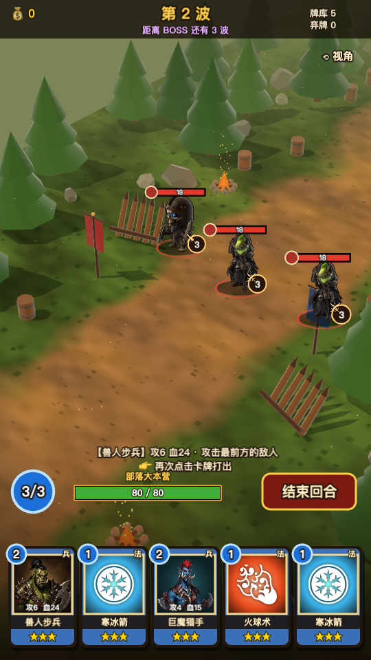
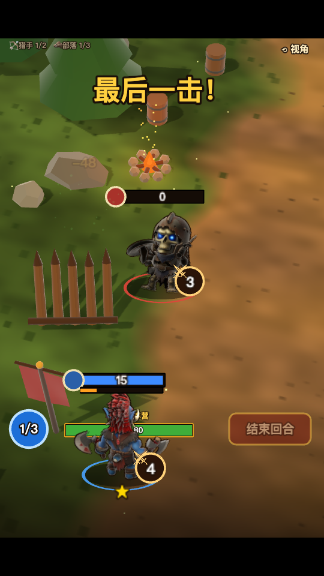
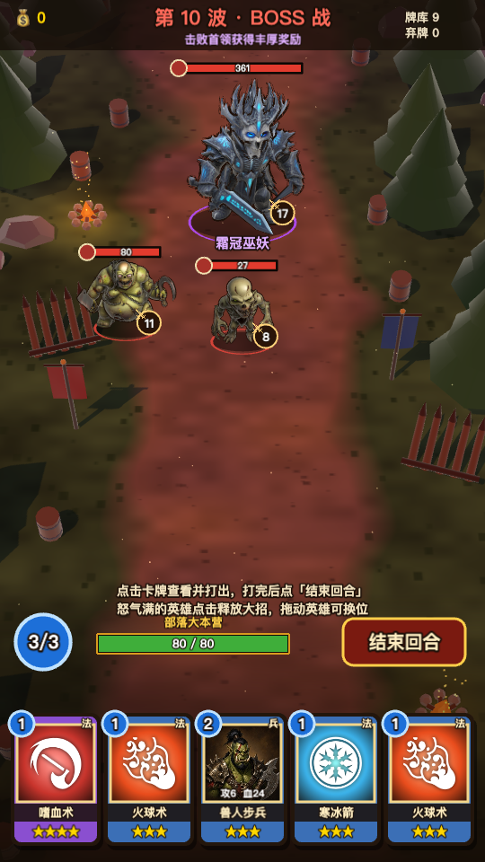
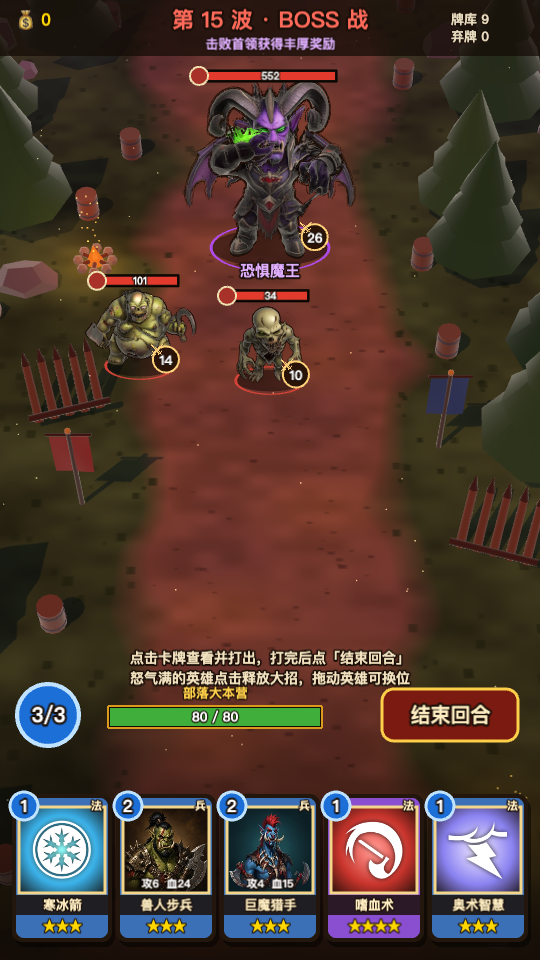
战斗手感
- 暴击：英雄攻击基础暴击率 10%，造成 1.8 倍伤害，显示橙色大号「暴击」数字，并有一瞬间的画面停顿和震屏。
- 击飞：暴击、元素反应或伤害大量溢出的击杀，会把敌人击飞出去。
- 元素反应：
- 火打冰冻目标 → 蒸汽爆炸：追加伤害，并溅射周围敌人
- 物理打冰冻目标 → 碎冰：必定暴击
- 闪电打灼烧目标 → 超载：引爆灼烧，并弹射一个敌人
英雄大招
英雄攻击、受击、击杀都会积攒怒气（血条下方的橙色条）。怒气满时，英雄脚下出现金色光圈，在你的回合点击英雄即可免费释放大招。释放时有过场：慢动作、镜头推向英雄、技能名横幅划过屏幕。
| 英雄 | 大招 | 效果 |
|---|---|---|
| 兽人步兵 | 旋风斩 | 全体 160% 攻击伤害 |
| 巨魔猎手 | 飞斧风暴 | 随机 6 把飞斧，每把 90% |
| 牛头人萨满 | 战争践踏 | 全体 120% 并眩晕 1 回合 |
| 冰霜法师 | 冰封领域 | 全体 220% 冰霜伤害并冰冻 |
| 矮人狂战士 | 雷霆一击 | 前排 400% 必定暴击 |
| 月神祭司 | 星辰坠落 | 全体 200%，治疗友军 14 |
| 圣盾卫士 | 圣光审判 | 前排 250%，全队护盾 12 |
| 游侠 | 箭雨 | 随机 8 支箭，每支 80% |
| 暗影术士 | 灵魂虹吸 | 全体 160% 火焰伤害并灼烧，吸取生命 |
| 雷鸣萨满 | 雷霆风暴 | 6 道落雷，每道 110%（可引爆灼烧） |
首领战
- 地面预警：首领每 3 回合会先在英雄脚下标出红色预警圈，下回合再轰击（攻击的 2.2 倍，冰系附带冰冻，火系附带灼烧）。在你的回合里，拖动英雄到别的位置就能躲开，全部躲开会显示「完美闪避！」。冰霜骨龙轰击一整排，巫妖砸 2 个位置，恐惧魔王砸 3 个位置。
- 狂暴化：首领血量降到一半时触发过场，天色变成血红，首领攻击 +30%，召唤 2 个援军，之后预警范围更大。
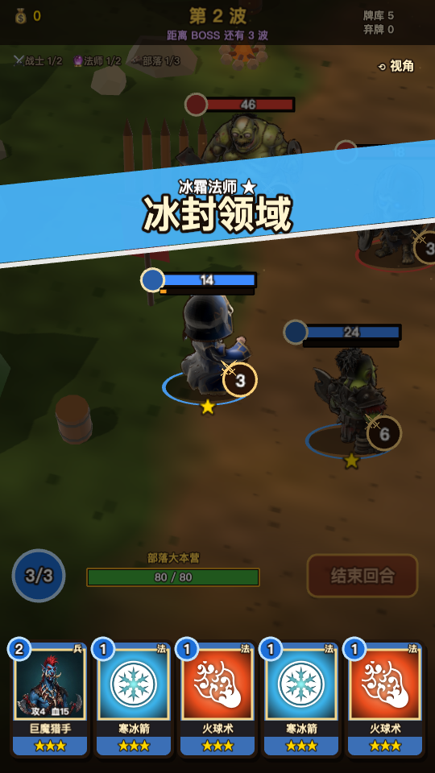
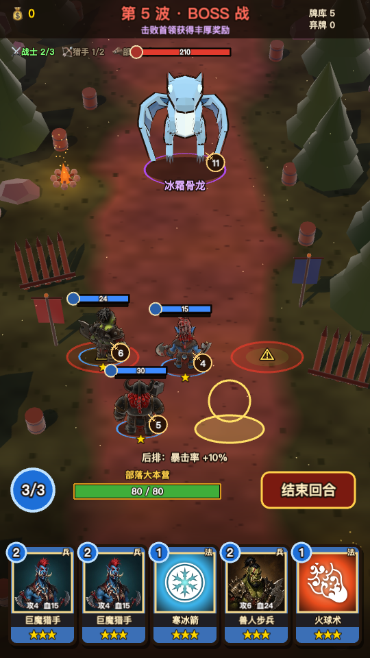
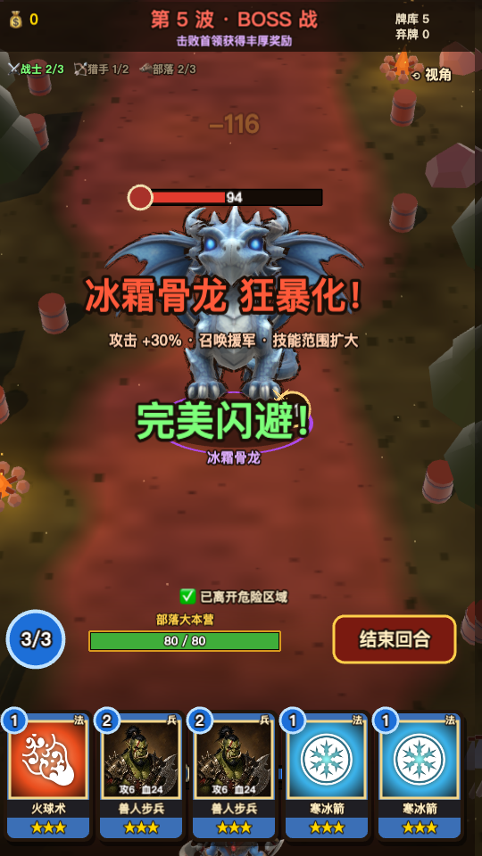
传说卡：巨龙空袭
3 费。打出后，一条冰霜巨龙从左下角斜着飞过战场，沿途喷火，对所有敌人造成 16 点火焰伤害，并附加每回合 4 点的灼烧。可能出现在史诗卡奖励和商店里。火焰打中冰冻的敌人同样会触发蒸汽爆炸。
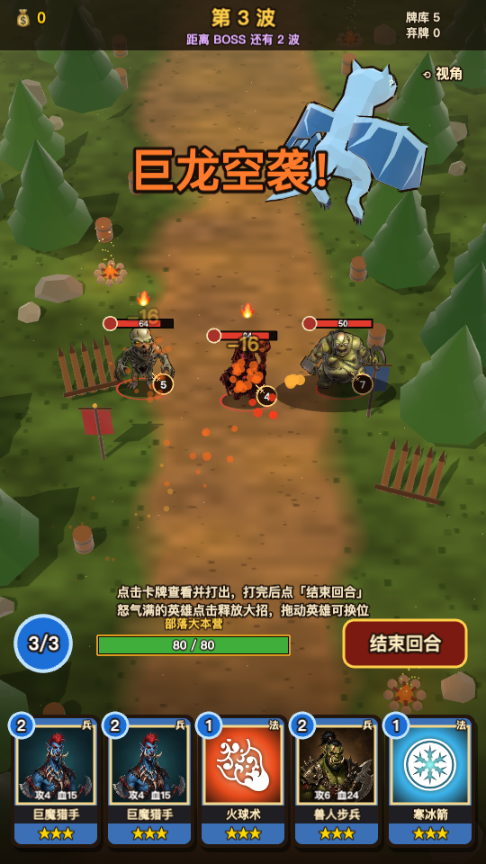
肉鸽系统
- 站位：前排（上面 3 个位置）受到伤害 -15%，后排（下面 2 个位置）暴击率 +10%。英雄可以随时拖动换位。
- 阵营羁绊：按场上不同英雄的数量激活，状态显示在左上角，点一下可以看说明。
- ⚔️ 战士（兽人步兵、矮人狂战士、圣盾卫士）：2 名全体受伤 -1，3 名 -3
- 🏹 猎手（巨魔猎手、游侠）：2 名暴击率 +15%
- 🔮 法师（冰霜法师、暗影术士）：2 名法术伤害 +3
- 🌀 萨满（牛头人萨满、雷鸣萨满）：2 名每回合开始全体回复 4
- 🌙 精灵（月神祭司、游侠）：2 名怒气获取 +50%
- 🐗 部落（兽人、巨魔、牛头人、雷鸣萨满）：3 名全体攻击 +2
- 遗物（12 种，整局生效）：战争号角、嗜血图腾、烈焰之心、永冻之晶、雷霆之锤、怒火徽记、致命匕首、先知法珠、龙鳞护符、屠夫砍刀、先祖王冠、地精金币。精英战和首领战结束后三选一，商店和奇遇里也能拿到。已有遗物显示在左上角，点一下可以看说明。
- 金币：每波胜利获得金币，精英战双倍，首领战三倍，显示在左上角。
- 分支路线地图：选完卡牌奖励后选择下一站：
- ⚔️ 战斗：普通敌人，奖励卡牌和金币
- 💀 精英：敌人约 1.5 倍强，奖励遗物和双倍金币
- 🔥 营火：休息（全体回满、大本营 +20）、锻造（随机英雄 +1 星）或冥想（全体怒气充满）
- 🛒 商店：买卡牌（30 到 120 金币）、遗物（100）、修缮城墙（30）
- ❓ 奇遇：神秘祭坛、流浪地精、先祖之灵、遗落的宝箱，四选一随机出现
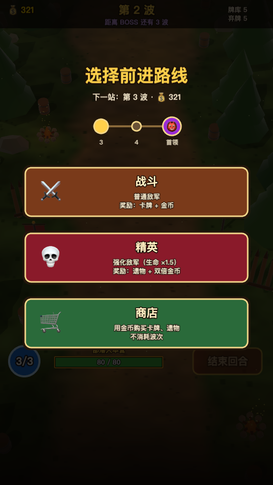
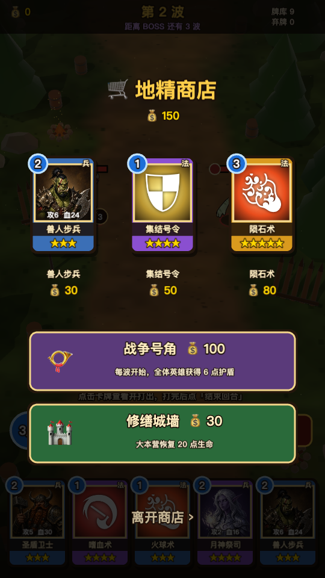
首领图鉴
每 5 波一个首领，按冰霜骨龙、霜冠巫妖、恐惧魔王的顺序出现，之后循环，每轮更强。下表是基础数值，实际数值随波次放大（每波 +10%），比如第 5 波骨龙是 11 攻 / 210 血，第 15 波魔王是 26 攻 / 552 血。第 10 波起，首领身边还会带一只食尸鬼和一只憎恶。
| 首领 | 出场 | 基础攻 / 血 | 技能（每 3 回合一轮） | 地面预警 |
|---|---|---|---|---|
| 冰霜骨龙 | 第 5 波 | 8 / 150 | 冰霜吐息：全体英雄受到 70% 攻击伤害，大本营 -5 | 冰霜吐息：轰击一整排，附带冰冻 |
| 霜冠巫妖 | 第 10 波 | 9 / 190 | 亡灵大军：召唤 2 只食尸鬼；冰霜新星：全体 50% 伤害并冰冻 1 名英雄 | 冰柱坠落：砸 2 个位置，附带冰冻 |
| 恐惧魔王 | 第 15 波 | 11 / 230 | 邪能火雨：全体 50% 伤害，大本营 -8；平时以 140% 伤害攻击攻击力最高的英雄并全额吸血 | 邪能陨石：砸 3 个位置，附带灼烧 |
- 预警节奏：首领在第 2、5、8…回合标出红圈，下回合轰击（攻击的 2.2 倍）。在你的回合把英雄拖出红圈即可躲开。
- 狂暴化：血量降到一半时触发过场，天色变红，首领攻击 +30%，召唤 2 个援军，之后预警范围扩大。
- 奖励：击败首领后全队回满血，金币三倍，可以选「能量上限 +1」或「全体英雄升星」，并三选一获得遗物。
- 模型：三个首领都有 AI 生成的 3D 模型。巫妖的符文剑固定在右手上，挥砍时不变形；恐惧魔王背后的翅膀会跟着动作扇动；骨龙用单独的四足骨骼，翅膀、三节尾巴和前爪都会动，攻击是扑咬，施法是仰头吐息。
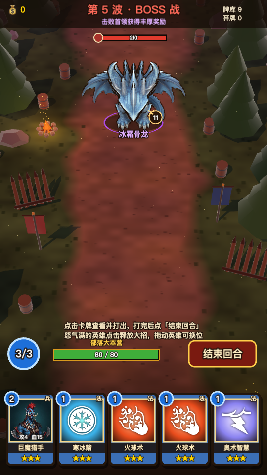
在「⚙ 设置」切回「现有模型」时，首领使用套装模型：
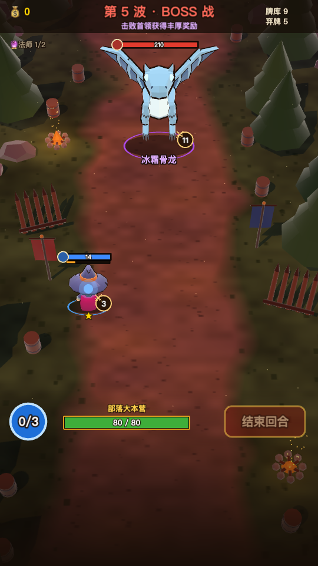
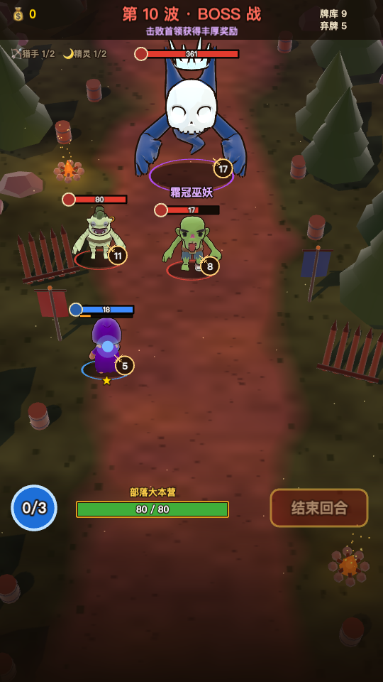
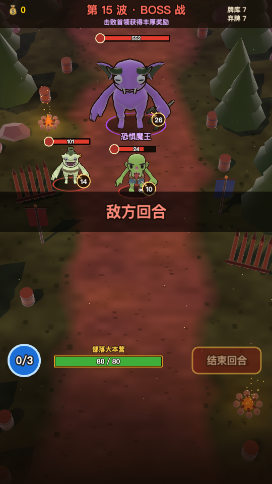
路边来客：先知与乌鸦领主
两位新角色会在波次开场时出现在路边，用对话框说一两句剧情介绍或预言，然后消失。德莱尼先知站在右侧，现身和离开时散出金光；乌鸦领主站在左侧，带紫色的羽光。台词逐字打出，点一下屏幕显示全文，再点一下跳到下一句。
| 时机 | 谁出现 | 说什么 |
|---|---|---|
| 第 1 波 | 德莱尼先知 | 开场介绍：亡灵天灾在北方苏醒，每五段路有一位首领挡路 |
| 首领战前一波（第 4、9、14…波） | 德莱尼先知 | 预言下一位首领，并提示打法（骨龙：拖开红圈；巫妖：先冰后火；魔王：留大招等它狂暴） |
| 击败首领后的第一波（第 6、11、16…波） | 乌鸦领主 | 嘲讽，并点出下一个首领的名字 |
| 精英战 | 乌鸦领主 | 提醒这是精英，打赢有遗物 |
| 其他波次 | 随机一位，30% 几率，至少隔 2 波 | 玩法小提示：羁绊、站位、营火、商店、怒气大招、元素反应等 |
两个模型都是这次用 Hugging Face 的 TRELLIS 生成并绑骨的。在套装模型模式下没有对应模型，会显示圆形立绘。台词和触发规则都在 src/oracle.ts。
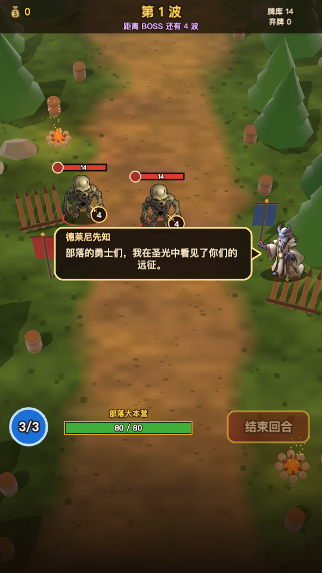
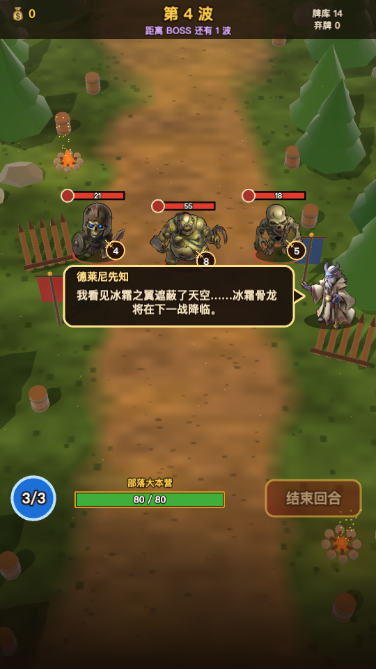
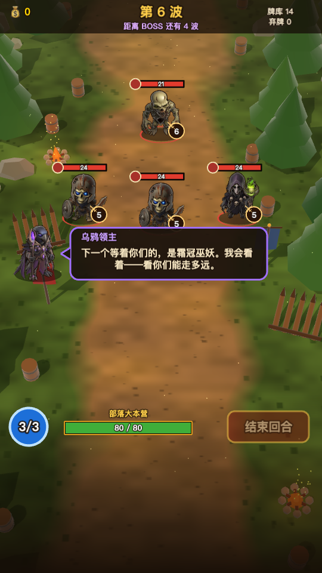
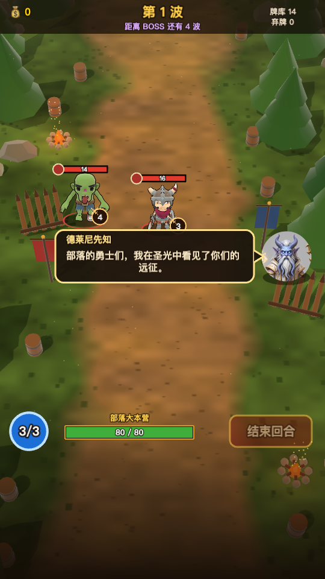
各阶段截图
以下截图都来自这次的自动化测试，按一局游戏的顺序排列。
出发前
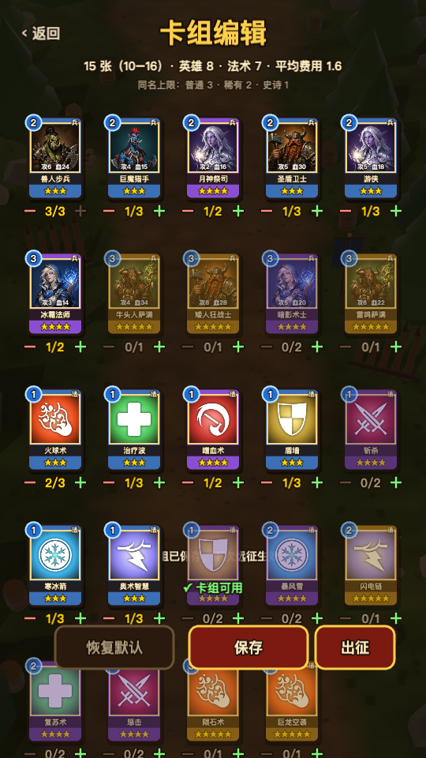
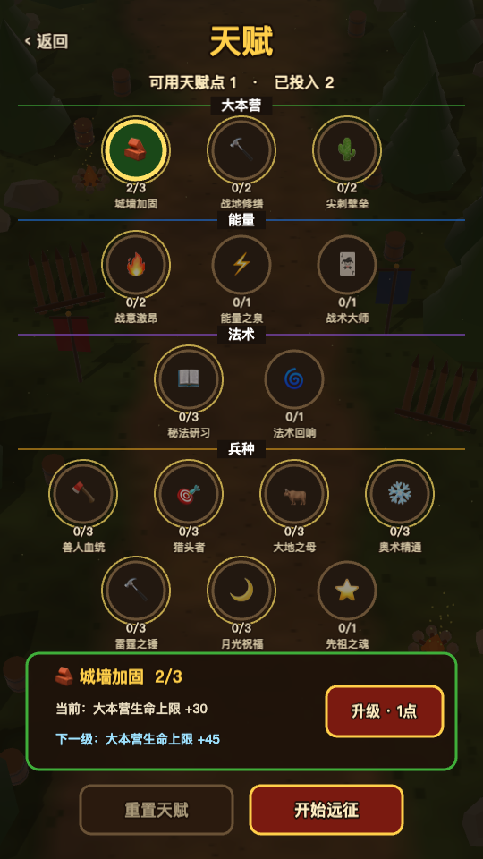
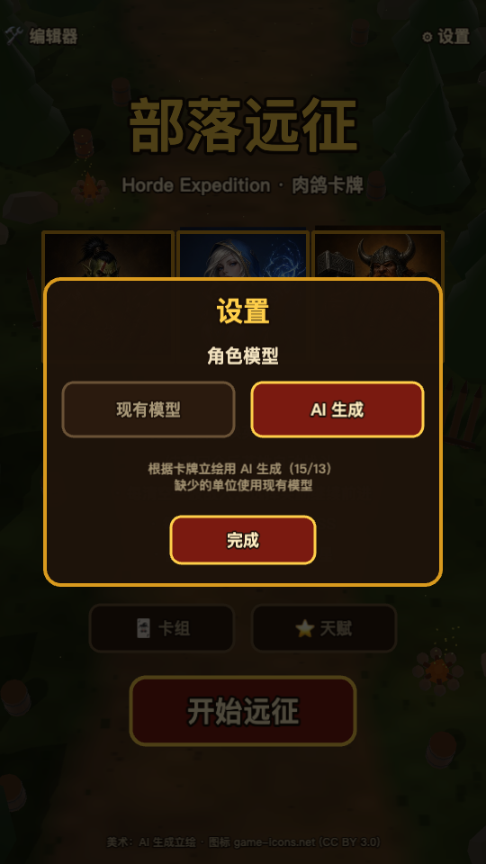
战斗
波次之间
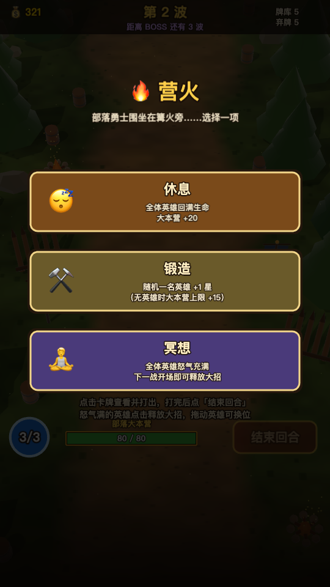
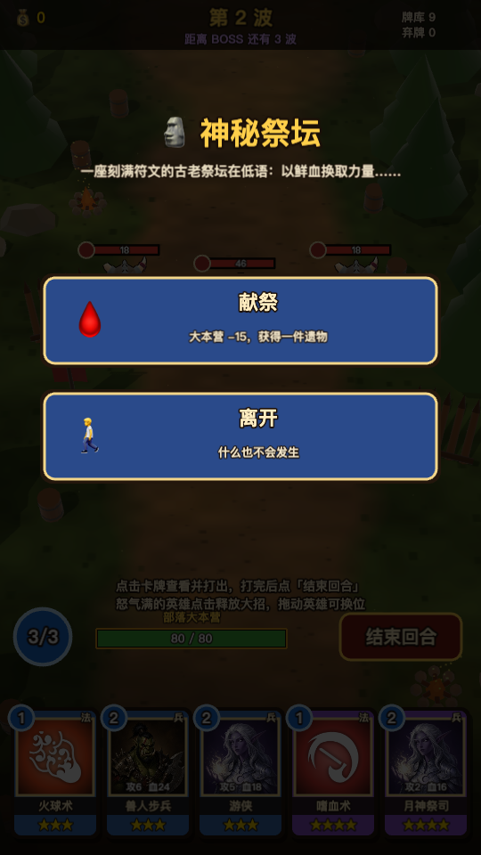
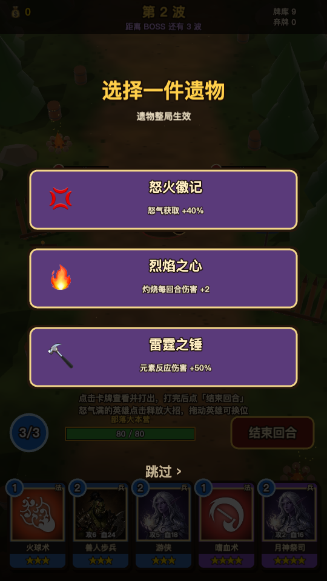
首领战
3D 模型制作流程
现在一共有 15 个 AI 模型：6 个英雄、4 种敌人、3 个首领、2 个路边来客。每个模型的制作步骤如下，以冰霜骨龙为例。
- 参考图：先生成一张灰底、全身、正面朝向的 Q 版角色图，保存在
.playtest/ai_refs/。 - 图生 3D：用
.playtest/ai_gen.py调用 Hugging Face 上的 TRELLIS（ZeroGPU），输出带贴图的 GLB 到.playtest/ai_raw/。每个模型约 1 分钟，排队时可能几分钟。免费额度有限，每次生成先预留 120 秒 GPU 时间，一天大约能做 2 到 3 个模型。这次首领模型就是等额度恢复（约 13 小时）后才生成的。 - 定朝向和关节：用 Blender 无头渲染带 0.1 网格的正视图和侧视图（
ai_rig_preview.py），先确认模型朝向（骨龙和魔王原本是背对镜头，需要转 180°），再按网格读出各关节坐标，写进.playtest/ai_rig_spec.json。 - 绑骨：
ai_rig.py按规格建骨架，用热量法自动分配权重，再做几类修正：- 武器等硬物按三维区域整体固定到手上，比如巫妖的剑、魔王的邪火、乌鸦领主的法杖；
- 可以额外加骨骼，比如魔王和骨龙的翅膀、骨龙的尾巴和前爪；
- 可以删除生成失败的碎片，比如先知手上那块没有贴图的悬浮水晶。
- 动画：为每个模型烘焙待机、行走、攻击、施法、受击、死亡、欢呼、眩晕 8 段动画。人形角色按近战、施法、弓箭三种风格生成攻击动作；骨龙用单独的一套四足动画。
- 检查：用
ai_pose_preview.py渲染每段动画的关键帧拼成对照表，检查有没有撕裂或拉伸。比如乌鸦领主的法杖底部和斗篷是连在一起的，第一次绑骨时杖一动就把斗篷拉出一大片，把法杖的固定区域缩小后就正常了。 - 接入游戏：导出到
public/models/ai/，加进manifest.json，再用自动化测试进游戏截图确认。
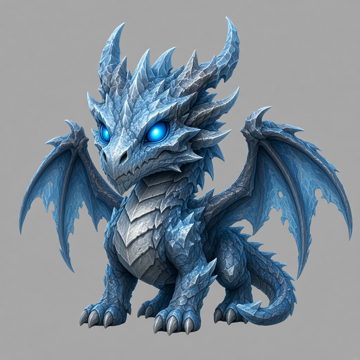
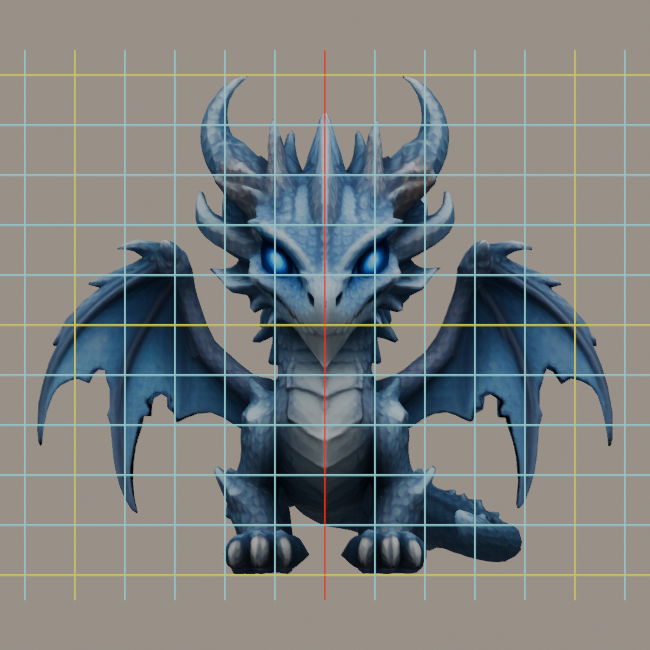
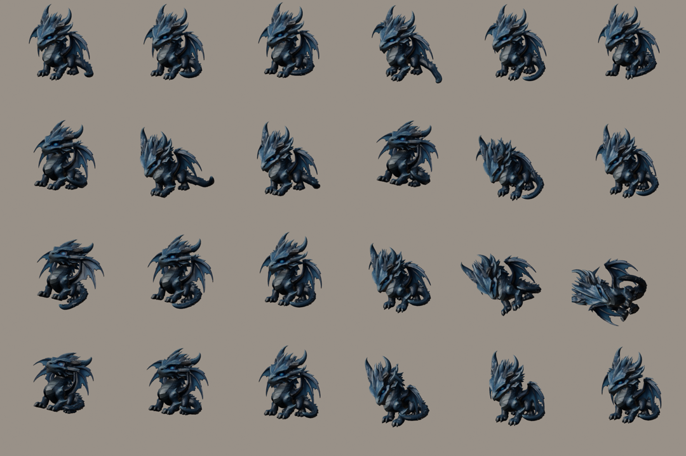
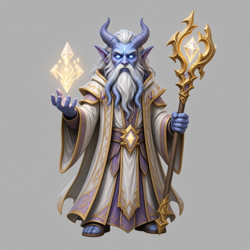
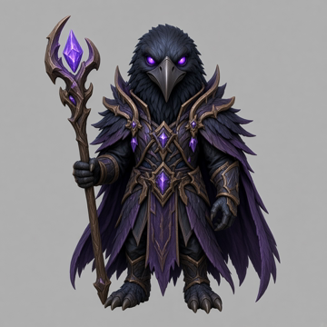
测试
所有测试都是 .playtest/ 下的 puppeteer 脚本，在无头 Chrome 里跑真实游戏，这次逐个运行，全部通过：
| 脚本 | 覆盖内容 |
|---|---|
playtest.mjs | 设置面板切换模型、天赋加点与重置、卡组编辑保存、第 1/5/10/15 波开局、出牌、回合结算，3D 模型无泄漏、无报错 |
features.mjs | 暴击、三种元素反应、羁绊与遗物显示、大招过场、首领预警与拖动躲避、狂暴化、巨龙空袭、路线地图与商店 |
finale.mjs | 最后一击：慢动作、镜头聚焦、恢复视角、胜利横幅 |
orbit.mjs | 旋转镜头、转动后点击单位、双击复位、滚轮缩放 |
route_screens.mjs | 营火、商店、四种奇遇、遗物选择界面 |
bosses.mjs | 三个首领的 AI 模型加载、待机、攻击、施法 |
oracle.mjs | 先知开场、首领预言、乌鸦领主嘲讽、套装模式下的立绘兜底，来客离开后正常开始回合 |
这次顺手修了两处过时的测试：卡组测试原来写死初始卡组是 10 张（现在是 14 张），设置测试在 AI 模型还没加载完时就点了切回。几项和时间相关的检查（大招慢动作、胜利横幅）在多个浏览器并行跑时会因为帧率下降偶尔失败，单独运行都正常。
相关代码
src/oracle.ts：路边来客的台词和出现规则。src/run.ts：大招、元素反应、羁绊、遗物、首领预警、路线的数据，调数值主要改这里。src/scenes/route.ts：路线、商店、营火、奇遇、遗物选择界面。src/scenes/BattleScene.ts：战斗逻辑，包括伤害、暴击、反应、大招过场、首领预警、狂暴化、巨龙空袭。src/three/view.ts：镜头旋转、缩放、聚焦和慢动作的共享状态。- 「巨龙空袭」同时写在
src/data.ts和public/card-data.json里，因为后者会整表覆盖卡牌数据。卡牌编辑器也支持编辑它。
素材
- 立绘和战场背景：是 AI 生成的原创魔兽风格图，没有用网上下载的暴雪原图，避免版权问题。替换成你自己的素材时，把
public/assets/里的同名文件覆盖掉就行。 - 法术图标：下载自 game-icons.net，免费，采用 CC BY 3.0 协议，菜单底部已经加了署名。
需要知道的几点
- 测试参数：网址后加
?wave=5可以直接从指定波次开始，比如直接打 BOSS。 - 调数值：卡牌、英雄、敌人、BOSS 的数值和波次生成都在
src/data.ts。 - 背景翻转：为了让背景能无缝循环滚动，战场图做了上下镜像拼接，所以前进几波后会看到倒过来的旗帜和树木。之后要改的话，可以换一张专门做成首尾相接的背景图。
- 重新启动：以后自己运行用
npm run dev，地址是 http://localhost:5174。 - 3D 模型：主菜单右上角「⚙ 设置」里可以在套装模型和 AI 模型之间切换。AI 模型的原始文件在
.playtest/ai_raw/，骨骼参数在.playtest/ai_rig_spec.json，用 Blender 运行.playtest/ai_rig.py重新绑骨并导出到public/models/ai/。